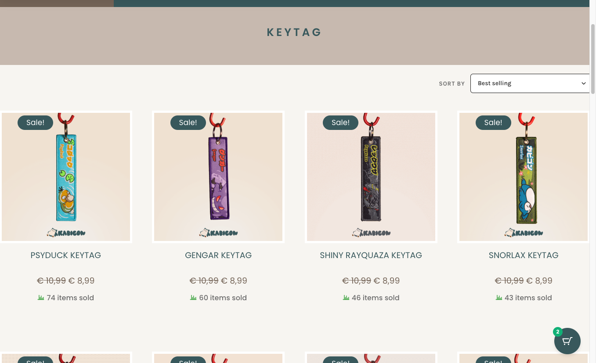
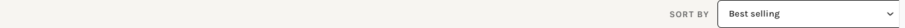
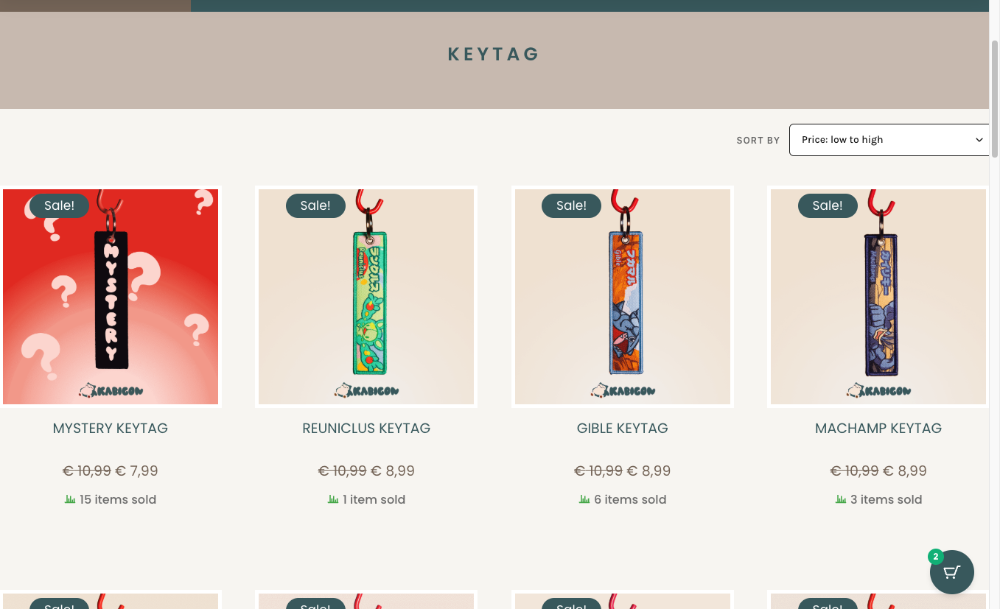

On category pages like KEYTAG, choosing Best selling used to show products in the wrong order (low product IDs first). Your top seller Psyduck appeared on page 6 instead of page 1.
That is now fixed. When a customer picks a sort option, the whole category is sorted correctly in the database before the page is split into pages of 24 products — so page 1 always shows the real best sellers.
?orderby= in the URL. Products reorder instantly across the full catalog.
?orderby=popularity
→
WooCommerce sorts all keytags by sales
→
Page 1 shows Psyduck first
Tip: click any screenshot to open a large view. Use scroll wheel, pinch, or the + / − buttons to zoom.

Click to enlargeFigure 1 — Best selling on KEYTAG (live). Sort dropdown set to “Best selling”. Psyduck KEYTAG is first with 74 items sold, followed by Gengar (60), Shiny Rayquaza (46), Snorlax (43) — descending by real sales.

Click to enlargeFigure 2 — Sort toolbar. The dropdown appears on category and shop archives. Options: Default, Best selling, Newest, Price low to high, Price high to low, Top rated.
A working sort system must return different product orders for different options. Before the fix, popularity and price showed the same wrong order. Now they are independent:
Best selling — Psyduck first (most sold)

Click to enlargePrice: low to high — Mystery KEYTAG first (€7.99)
| Test | Expected | Result |
|---|---|---|
| Best selling (KEYTAG) | Psyduck (10679) first on page 1 | PASS |
| Matches WooCommerce data | Front-end order = Store API order (top 10) | PASS |
| Price low → high | Cheapest first; order ≠ Best selling | PASS |
| Sort toolbar visible | Dropdown on category archives | PASS |
| Live deploy (WPCode 11822) | v1.3.6 active, cache cleared | PASS |
| # | Product | Sales |
|---|---|---|
| 1 | PSYDUCK KEYTAG | 74 sold |
| 2 | GENGAR KEYTAG | 60 sold |
| 3 | SHINY RAYQUAZA KEYTAG | 46 sold |
| 4 | SNORLAX KEYTAG | 43 sold |
| 5 | ZEKROM KEYTAG | 39 sold |
| 6 | SHINY UMBREON KEYTAG | 34 sold |
| 7 | RESHIRAM KEYTAG | 30 sold |
| 8 | UMBREON KEYTAG | 25 sold |
| 9 | DARKRAI KEYTAG | 25 sold |
| 10 | EEVEE KEYTAG | 24 sold |
| Sort | Before (broken) | After (v1.3.6) |
|---|---|---|
| Best selling | Reuniclus, Gible… (wrong ID order). Psyduck on page 6. | Psyduck first on page 1 |
| Price | Same wrong order as Best selling | Cheapest products first (€7.99 Mystery KEYTAG) |
posts_clauses SQL sorting.suppress_filters = false and hooks elementor/query/{id} on the WP_Query instance.{kind=link}
{kind=link}
{kind=link}